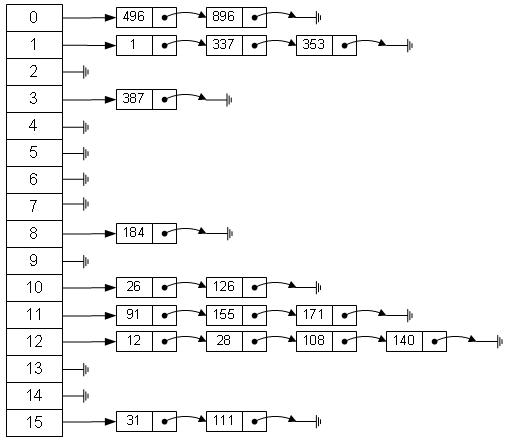

什么是哈希表：数组和向量都可以存储对象，但对象的存储位置是随机的，也就是说对象本身与其存储位置之间没有必然的联系。当要查找一个对象时，只能以某种顺序（如顺序查找或二分查找）与各个元素进行比较，当数组或向量中的元素数量很多时，查找的效率会明显的降低。一种有效的存储方式，是不与其他元素进行比较，一次存取便能得到所需要的记录。这就需要在对象的存储位置和对象的关键属性（设为 k）之间建立一个特定的对应关系（设为 f），使每个对象与一个唯一的存储位置相对应。在查找时，只要根据待查对象的关键属性 k 计算f(k)的值即可。如果此对象在集合中，则必定在存储位置 f(k)上，因此不需要与集合中的其他元素进行比较。称这种对应关系 f 为哈希（hash）方法，按照这种思想建立的表为哈希表。
- 哈希算法，是一类算法；
- 哈希表（Hash Table）是一种**数据结构**；
- 哈希函数，是支撑哈希表的一类函数；
Map是映射、地图的意思，在**Java**中Map表示一种把K映射到V的数据类型；HashMap是Java中用哈希数据结构实现的Map；
一、数据结构、数据类型
在看Java和JavaScript的HashMap之前，插播一点重要的数据结构要点。
1. 数据结构（data structure）
- 数据结构表达的是：用什么样的结构，组织一类数据。
- 分为逻辑结构和物理结构：
- 基本的逻辑结构有：集合、线性结构、树形结构、图；
- 物理结构：顺序存储、链式存储；
2. 数据类型（data type）
- 数据类型是和数据结构密切相关的，它是：值的集合和定义在这个值集上的一组操作的总称。 例如：**c语言**中的一种数据类型：整型变量，其值集为某个区间上的整数，定义在这些整数上的操作为加、减、乘、除和取模等算数运算。
- 高级语言中数据类型分为两类：
- 原子类型：值不可分解，是什么就是什么。如整型、字符型等；
- 结构类型：其值是由若干成分按某种结构组成的，因此可分解，并且它的成分可以是原子类型也可以是结构类型。比如数组，其值是由若干分量组成的，每个分量可以是整数，或者也可以是数组。
- 所以，结构类型可以看成由一种数据结构和定义在其上的一组操作组成。
- 所以你看，数据结构仅仅代表着一种结构，而我们在编程语言中是使用数据类型，如果编程语言想要实现某种数据结构，那么必须将其封装为一种数据类型，更狭义的说是数据类型中的结构类型。
3. 深入理解
- 实际上，在计算机中，数据类型的概念并非局限于高级语言中，每个处理器[a]都提供了一组原子类型或结构类型。
- 例如，一个计算机硬件系统通常含有“位”、“字节”、“字”等原子类型，他们的操作通过计算机设计的一套指令系统直接由电路系统完成；
- 而高级程序语言提供的数据类型，其操作需要通过编译器或解释器转化为底层，即汇编语言或机器语言的数据类型来实现。
- 引入“数据类型”的目的，
- 从硬件角度看，是作为解释计算机内存中信息含义的一种手段，
- 而对使用数据类型的用户来说，实现了信息的隐蔽，即将一切用户不必了解的细节都封装在类型中。
- 例如，用户在使用“整数”类型时，既不需要了解“整数”在计算机内部是如何表示的，也不需要知道其操作是如何实现的。
- 如“两个整数求和”，程序员注重的仅仅是其“数学上求和”的抽象特性，而不是其硬件的“位”操作如何进行。
所以， 在编程语言中运用“数据结构”就是在使用被一层一层封装起来的某种数据类型 在编程语言中运用“数据结构”就是在使用被一层一层封装起来的某种数据类型 在编程语言中运用“数据结构”就是在使用被一层一层封装起来的某种数据类型
二、Hash算法
1. 是什么？
- 查词典 先来看英语翻译： 我觉得 切碎 最适合，但正式上会被称为“散列 ”。有时候也叫“哈希 ”，据说是因为最早翻译的人以为这是某个叫Hash 的人发明的算法，所以音译了其名字； （下面我可能会根据情况混合使用这些词，所以要记得他们是同义词）
1
2
3
4
5hash
英 [hæʃ] 美 [hæʃ]
n. 剁碎的食物；混杂，拼凑；重新表述
vt. 搞糟，把…弄乱；切碎；推敲
n. (Hash)人名；(阿拉伯、保、英)哈什；(西)阿什 - 所以 Hash算法 是这样一类算法：所以，MD5 可能是最著名的一种Hash算法 了。
所以注意：Hash算法 不是某个固定的算法，它代表的是一类算法。 以更好理解的方式来说，Hash算法 是摘要算法 ：也就是说，从不同的输入中，通过一些计算摘取出来一段输出数据，值可以用以区分输入数据。这类算法接受任意长度的二进制输入值，对输入值做换算（切碎），最终给出固定长度的二进制输出值；
2. 有什么用？
那么，具体来说Hash/摘要/散列/切碎算法 有哪些用处呢？
- 信息安全领域： Hash算法 可用作加密算法。 如文件校验：通过对文件摘要，可以得到文件的“数字指纹”，你下载的任何副本的“数字指纹”只要和官方给出的“数字指纹”一致，那么就可以知道这是未经篡改的。例如著名的MD5 ；
- 数据结构领域： Hash算法 通常还可用作快速查找。 这是今天我想说的部分。根据Hash函数 我们可以实现一种叫做哈希表（Hash Table）的数据结构。这种结构可以实现对数据进行快速的存取。
接下来我们就来看看Hash算法 的一个重要的应用领域：数据结构 - 哈希表；
二、哈希表
1. 什么是哈希表
首先想一个问题：我们是如何在数据结构中做查找的呢？
- 线性表、树 线性表、树 这些结构中，记录 在结构 中的相对位置是随机的，和记录的关键字之间不存在确定关系，因此，在结构中查找时需要进行一系列和关键字的比较。这一类查找方法建立在“比较”的基础上。在顺序查找时，比较的结果为“=”与“≠”2种可能；在折半查找、二叉排序树查找和B-树查找时，比较的结果为“<”“=”“>”3种可能。查找的效率依赖于查找过程中所进行的比较次数。
- 哈希表 理想的情况是希望不经过任何比较，一次存取便能得到所查记录，那就必须在记录的存储位置和它的关键字之间建立一个确定的关系，使每个关键字和结构中一个唯一的存储位置相对应。因而在查找时，只要根据这个对应关系找到给定值的像。若结构中存在关键字和相等的记录，则必定在的存储位置上，反之在这个位置上没有记录。由此，不需要比较便可直接取得所查记录。在此，我们称这个对应关系为哈希(Hash)函数 ，按这个思想建立的表为哈希表 。 （插播：注意“理想情况”这几个字~~ 这会在后文给出解释）
这是《数据结构（**C语言**版）》[1]中引出哈希表的一段描述，通俗易懂。所以，我们知道了什么是哈希函数 和哈希表 。
- 哈希函数
- 灵活：哈希函数是一个映像，因此哈希函数的设定很灵活，只要使得任何关键字由此所得的哈希函数值都落在表长允许的范围之内即可。
- 冲突：对不同的关键字可能得到同一哈希地址，即$key_1\ne key_2$而 $f(key_1)=f(key_2)$，这种现象称为冲突（collision）； 冲突只能尽量地少，而不能完全避免。因为，哈希函数是从关键字集合到地址集合的映像。而通常关键字集合比较大，它的元素包括所有可能的关键字，而地址集合的元素仅为哈希表中的地址值。因此，在实现哈希表这种数据结构的时候不仅要设定一个“好”的哈希函数，而且要设定一种处理冲突的方法。
综上所述，我们可以给出哈希表的定义如下：
根据设定的Hash函数 - $H(key)$和处理冲突的方法，将一组关键字映象 到一个有限的连续的地址集（区间）上，并以关键字在地址集中的象 作为记录在表中的存储位置，这样的表便称为Hash表 ；
2. 哈希函数
上面我们已经引出了并解释了Hash函数 。实际工作中，需要视不同的情况采用不同的Hash函数 ，通常要考虑的因素有：
- Hash函数 执行的时间；
- 关键字 的长度；
- Hash表 的大小；
- 关键字 的分布情况；
- 记录 的查找频率；
有如下一些常用的Hash函数 构造方法：
- 直接寻址法： $f(k)=k$ 或者 $f(k)=a*k+b$ 取 k 或 k 的某个线性函数为Hash地址 。 特点：由于直接地址法相当于有多少个关键字就必须有多少个相应地址去对应，所以不会产生冲突，也正因为此实际中很少使用这种构造方法。
- 数字分析法： 首先分析待存的一组关键字 ，比如是一个班级学生的出生年月日 ，我们发现他们的出生年 大体相同，那么我们肯定不能用他们的年 来作为存储地址 ，这样出现冲突 的几率很大；但是，我们发现月日 的具体数字差别很大，如果我们用月日 来作为Hash地址 ，则会明显降低冲突几率。因此，数字分析法就是找出关键字 的规律，尽可能用差异数据来构造Hash地址 ； 特点：需要提前知道所有可能的关键字，才能分析运用此种方法，所以不太常用。
- 平方取中法： 先求出关键字的平方值，然后按需要取平方值的中间几位作为哈希地址。这是因为：平方后中间几位和关键字中每一位都相关，故不同关键字会以较高的概率产生不同的哈希地址。 例：我们把英文字母在字母表中的位置序号作为该英文字母的内部编码。例如K的内部编码为11，E的内部编码为05，Y的内部编码为25，A的内部编码为01, B的内部编码为02。由此组成关键字“KEYA”的内部代码为11052501，同理我们可以得到关键字“KYAB”、“AKEY”、“BKEY”的内部编码。之后对关键字进行平方运算后，取出第7到第9位作为该关键字哈希地址，如下图所示：
| 关键字 | 内部编码 | 内部编码的平方值 |
|---|---|---|
| KEYA | 11050201 | 122157778355001 |
| KYAB | 11250102 | 126564795010404 |
| AKEY | 1110525 | 1233265775625 |
| BKEY | 2110525 | 4454315775625 |
特点：较常用。
- 折叠法： 将关键字分割成位数相同的几部分（最后一部分位数可以不同），然后取这几部分的叠加和（去除进位）作为散列地址。数位叠加可以有移位叠加和间界叠加两种方法。移位叠加是将分割后的每一部分的最低位对齐，然后相加；间界叠加是从一端向另一端沿分割界来回折叠，然后对齐相加。
- 随机数法： 选择一个随机函数，取关键字的随机函数值作为Hash地址 ，通常用于关键字长度不同的场合。即 特点：通常，关键字长度不相等时，采用此法构建Hash函数 较为合适。
- 除留取余法： 取关键字被某个不大于Hash表 长m 的数p 除后所得的余数为Hash地址 。 特点：这是最简单也是最常用的Hash函数构造方法。可以直接取模，也可以在平法法、折叠法之后再取模。 值得注意的是，在使用除留取余法 时，对p 的选择很重要，如果p 选的不好会容易产生同义词 。由经验得知：p 最好选择不大于表长m的一个质数 、或者不包含小于20的质因数的合数。
3. 处理冲突
如何处理冲突是哈希造表不可缺少的一个方面。现在完整的描述一下处理冲突：
假设哈希表的地址集为，冲突是指由关键字得到的哈希地址为的位置上已存有记录，则“处理冲突”就是为该关键字的记录找到另一个“空”的哈希地址。 在处理冲突的过程中可能得到一个地址序列。即在处理哈希地址的冲突时，若得到的另一个哈希地址仍然发生冲突，则再求下一个地址，若仍然冲突，再求，依次类推，直至不发生冲突为止，则为记录在表中的地址。 （需要注意此定义不太适合链地址法）
那么，通常有以下4种方法：
- 开放定址法：$Hi=(H(key)+d_i) \mod\ m，i=1,2,…,k(k≤m−1)$ $H(key)$为哈希函数； $m$ 为哈希表表长；$d_i$为增量序列，有3种取法：
- $d_i=1,2,3,…,m-1$，称为线性探测再散列；
- $d_i = 1^2,-1^2,2^2,…,\pm k^2$，称为二次探测再散列；
- $d_i=$伪随机数序列，称为伪随机探测再散列；
- 再哈希法： $H_i=RH_i(key),i=1,2,…,k$ $RH_i$均是不同的哈希函数，即在同义词产生地址冲突时计算另一个哈希函数地址，直到冲突不再发生，这种方法不易产生聚集 ，但增加了计算时间；
- 链地址法： 将所有关键字为同义词的记录存储在同一线性表中。即在Hash 出来的哈希地址中不直接存Key ，而是存储一个Key 的链表 ，当发生冲突 时，将同义的Key 加入链表 ； 
- 公共溢出区： 可以建立一个公共溢出区，用来存放有冲突的Key 。比如设立另一个哈希表，专门用来存放出现冲突的同义词。
4. 查找及分析
在哈希表上进行查找的过程和哈希造表的过程基本是一致的，过程就不累述了。我们需要看一看其查找的长度。
- 平均查找长度
- 虽然哈希表在关键字与记录的存储位置之间建立了直接映像，但由于“冲突”的存在，使得哈希表的查找过程仍然是一个“给定值和关键字进行比较”的过程。因此，仍需以平均查找长度作为衡量哈希表的查找效率的量度； （还记得上面我们说的“理想情况下”吗？~~ 现实告诉我们，一般情况下，还是不得不需要“比较”！）
- 查找过程中需要和给定值进行比较的关键字的个数取决于下列三个因素：
- 哈希函数；
- 处理冲突的方法；
- 哈希表的装填因子；
- 装填因子 在一般情况下，我们设计的哈希函数肯定是尽量均匀的，所以可以不考虑它对平均查找长度的影响。那么，处理冲突方法相同的哈希表，其平均查找长度就依赖于哈希表的装填因子了。其定义如下：
- 装填因子$\alpha$（Load Factor）：装填因子表示为哈希表的装满程度，其值等于元素数比上哈希表的长度。
- $\alpha$越小，发生冲突的可能性就越小；
- $\alpha$越大，代表着表中已填入的元素越多，再填入元素时发生冲突的可能性就越大。那么在查找时，给定值需要比较的关键字的个数就越多；
结论如下：
哈希表的平均查找长度是装填因子$\alpha$的函数，而不是n的函数。因此，不管n多大，我们总是可以选择一个合适的装填因子以便将平均查找长度限定在一个范围内。（Java中HashMap的默认装填因子是0.75）
四、Java的HashMap
FAQ：
- Hash表 和
HashMap的关系？ 答：Hash表 是一种逻辑数据结构，HashMap是Java中的一种数据类型（结构类型），它通过代码实现了Hash表 这种数据结构，并在此结构上定义了一系列操作。 - 这一章节我们要干嘛？ 答：我们是在讨论一种高级程序设计语言中某个数据类型的实现，它实现了哈希表这种数据结构，但它绝不是哈希表本身，它就是它自己 -
HashMap类型。 不明白的话我再说一句：记不记得你学Map(HashMap父接口)时见到的第一句描述“An object that maps keys to values. ”简单翻译就是：Map是一个键值对对象。但是，可没人告诉过你哈希表是键值对结构。 - Java中的数据类型 答：有些话不明白的说出来，其实容易让人想不明白。所以我想说：
- 实际上，编程语言中数据类型都是层层封装的结果；
- 实际上，Java 中只有3类数据类型：原生类型（primitive8个）、数组、Object；
- 实际上，无论官方的集合框架也好，你自己创建的类也好，都只能是源自于Object并依赖于原有的这3类数据类型；
- 最终，到现在你可能才会发现，“数组”这种类型竟是如此的重要，在Java 中，如果没有数组作为基础结构，你是不可能构造出任何想实现某种数据结构的Object类型的。
其实有了以上内容，你应该可以轻松的看懂HashMap的源码了，不过我们还是一起来看一下↓
- 上帝视角的
HashMapHashMap是基于数组来实现哈希表的，数组就好比内存储空间，数组的index就好比内存的地址；HashMap的每个记录就是一个Entry<K, V>对象，数组中存储的就是这些对象；HashMap的哈希函数 = 计算出hashCode+ 计算出数组的index；HashMap解决冲突：使用链地址法，每个Entry对象都有一个引用next来指向链表的下一个Entry；HashMap的装填因子：默认为0.75；- 基本上
HashMap就像这样：
new HashMap1
2
3
4
5
6
7
8
9
10
11
12
13
14
15
16
17
18
19
20
21
22
23
24
25
26
27
28
29
30
31
32
33
34
35
36
37
38
39
40
41
42
43
44
45
46
47
48
49
50
51
52
53
54
55
56
57
58
59
60
61
62
63
64
65
66
67
68
69
70
71
72
73
74
75
76/*** 1. 构造方法：最终使用的是这个构造方法 ***/
// 初始容量initialCapacity为16，装填因子loadFactor为0.75
public HashMap(int initialCapacity, float loadFactor) {
if (initialCapacity < 0)
throw new IllegalArgumentException("Illegal initial capacity: " +
initialCapacity);
if (initialCapacity > MAXIMUM_CAPACITY)
initialCapacity = MAXIMUM_CAPACITY;
if (loadFactor <= 0 || Float.isNaN(loadFactor))
throw new IllegalArgumentException("Illegal load factor: " +
loadFactor);
this.loadFactor = loadFactor;
threshold = initialCapacity;
init();//init可以忽略，方法默认为空{}，当你需要集成HashMap实现自己的类型时可以重写此方法做一些事
}
/*** 2. (静态/实例)成员变量 ***/
/** 默认的容量，容量必须是2的幂 */
static final int DEFAULT_INITIAL_CAPACITY = 1 << 4;// aka 16
/** 最大容量2的30次方 */
static final int MAXIMUM_CAPACITY = 1 << 30;
/** 默认装填因子0.75 */
static final float DEFAULT_LOAD_FACTOR = 0.75f;
/** 默认Entry数组 */
static final Entry<?,?>[] EMPTY_TABLE = {};
/** Entry数组：table */
transient Entry<K,V>[] table = (Entry<K,V>[]) EMPTY_TABLE;
/** table中实际的Entry数量 */
transient int size;
/**
* size到达此门槛后，必须扩容table；
* 值为capacity * load factor，默认为16 * 0.75 也就是12。
* 意味着默认情况构造情况下，当你存够12个时，table会第一次扩容
*/
int threshold;
/** 装填因子，值从一开构造HashMap时就被确定了，默认为0.75 */
final float loadFactor;
/**
* 哈希种子，实例化HashMap后在将要使用前设置的随机值，可以使得key的hashCode冲突更难出现
*/
transient int hashSeed = 0;
/**
* The number of times this HashMap has been structurally modified
* Structural modifications are those that change the number of mappings in
* the HashMap or otherwise modify its internal structure (e.g.,
* rehash). This field is used to make iterators on Collection-views of
* the HashMap fail-fast. (See ConcurrentModificationException).
*/
transient int modCount;
/*** 3. Map.Entry<K,V>：数组table中实际存储的类型 ***/
static class Entry<K,V> implements Map.Entry<K,V> {
final K key;// "Key-Value对"的Key
V value;// "Key-Value对"的Key
Entry<K,V> next;
int hash;
Entry(int h, K k, V v, Entry<K,V> n) {
value = v;
next = n;//链表的下一个Entry
key = k;
hash = h;
}
public final int hashCode() {
return Objects.hashCode(getKey()) ^ Objects.hashCode(getValue());
}
}
1234567891011121314151617181920212223242526272829303132333435363738394041424344454647484950515253545556575859606162636465666768697071727374757612345678910111213141516171819202122232425262728293031323334353637383940414243444546474849505152535455565758596061626364656667686970717273747576- 存 - put(key, value)、解决冲突
1
2
3
4
5
6
7
8
9
10
11
12
13
14
15
16
17
18
19
20
21
22
23
24
25
26
27
28
29
30
31
32
33
34
35
36
37
38
39
40
41
42
43
44
45
46
47
48
49
50
51
52
53
54
55
56
57
58
59
60
61
62
63
64
65
66
67
68
69
70/** 存放 **/
public V put(K key, V value) {
if (table == EMPTY_TABLE) {
inflateTable(threshold);//table会被初始化为长度16，且hashSeed会被赋值；
}
if (key == null)
//HashMap允许key为null：在table中找到null key，然后设置Value，同时其hash为0；
return putForNullKey(value);
// a). 计算key的hashCode，下面详细说
int hash = hash(key);
// b). 根据hashCode计算index
int i = indexFor(hash, table.length);
// c). 做覆盖，遍历index位置的Entry链表，*不是解决*冲突
for (Entry<K,V> e = table[i]; e != null; e = e.next) {
Object k;
if (e.hash == hash && ((k = e.key) == key || key.equals(k))) {
// hashCode和equals都相等则表明：本次put是覆盖操作，下面return了被覆盖的老value
V oldValue = e.value;
e.value = value;
e.recordAccess(this);
return oldValue;
}
}
modCount++;
// d). 添加Entry，并解决冲突
// 如果需要增加table长度（size>threshold）就乘2增加，并重新计算每个元素在新table中的位置和转移
addEntry(hash, key, value, i);
return null;//增加成功最后返回null
}
//详细说说上面的a). b). d).
/** a). 为了防止低质量的hash函数，HashMap在这里会重新计算一遍key的hashCode **/
final int hash(Object k) {
int h = hashSeed;
if (0 != h && k instanceof String) {//字符串会被特殊处理，返回32bit的整数（就是int）
return sun.misc.Hashing.stringHash32((String) k);
}
h ^= k.hashCode();//将key的hashCode与h按位异或，最后赋值给h
// This function ensures that hashCodes that differ only by
// constant multiples at each bit position have a bounded
// number of collisions (approximately 8 at default load factor).
h ^= (h >>> 20) ^ (h >>> 12);
return h ^ (h >>> 7) ^ (h >>> 4);
}
/**
* b). 计算此hashCode该被放入table的哪个index
*/
static int indexFor(int h, int length) {
return h & (length-1);//与table的length - 1按位与，就能保证返回结果在0-length-1内
}
/**
* 解决冲突：链地址法
* d). addEntry(hash, key, value, i)最终是调用了此函数
*/
void createEntry(int hash, K key, V value, int bucketIndex) {
Entry<K,V> e = table[bucketIndex];// index的Entry拿出来
// put添加新元素是直接new Entry放在链头，如果有老的（有冲突）则将next设置为老的，如果没有正好设置next为null
table[bucketIndex] = new Entry<>(hash, key, value, e);// 在构造函数中，e代表next
size++;
}
1234567891011121314151617181920212223242526272829303132333435363738394041424344454647484950515253545556575859606162636465666768697012345678910111213141516171819202122232425262728293031323334353637383940414243444546474849505152535455565758596061626364656667686970 - 取 - get(key)
1
2
3
4
5
6//其实看完了最精髓的存，取的话就比较简单，就不放代码在这里了，仅说下思路。
// 1. 根据k使用hash(k)重新计算出hashCode
// 2. 根据indexFor(int h, int length)计算出该k的index
// 3. 如果该index处Entry的key与此k相等，就返回value，否则继续查看该Entry的next
1234512345
五、JavaScript的Hushmap
Java中的HashMap是以链表散列的形式存储的，也就是数组+链表：HashMap中有一个Entry数组，默认的数组长度是16。这个值必须是2的整数次幂，以保证在通过key的hash值来计算entry应该放置的数组下标时可以尽量做到平均分配。而Entry数组中的每一个非空Entry都是一个Entry链表的头结点。这样做的好处就是HashMap结合了数组在寻址（查找）上的优势和链表在放置和删除上的优势。当一个链表的长度过长，查询所耗费的时间也在增加，当达到一定阈值的时候，Entry数组就会自动扩容至原来的两倍。这个时候就需要把原数组的所有元素都拷贝至新数组中，这也是HashMap操作过程中一个消耗相对大一些的操作。
不过在JavaScript中，并没有为我们提供一个类似于HashMap的结构用于存储数据。JavaScript中的数组其实可以被用来当做一个映射集，比如如下语句
1 | var a = new Array(1,2,3); |
都是可以正常运行的，不过有一点需要注意的是，当[]里不是非负整数的时候，该属性并没有被存放到数组中，而是作为这个数组对象的一个属性被存储进来。所以这样的赋值显然也不会改变数组的长度。当上面的语句被执行之后，如果你输出这个数组的长度，则依然会得到3。这显然不是我们想要的结果，所以我们可以参考Java中的HashMap源码来写一个在JavaScript中适用的HashMap。
正文
在Javascript中，我们仍然以”数组+链表“的链表散列形式来存储HashMap中的数据。这里我们规定key的值必须为字符串，可以为空字符串，但是不能为null或undefined。这样做的原因一是大部分的时间我们都会以字符串作为key，而我们的HashMap计算hash值的方法就是通过计算key值字符串每个字符的ASCII码并拼接获得的；还有一个原因就是Javascript中并不会像Java语言中会为每个不同的对象生成不同的hash值，所以Javascript中对象之间的比较也非常复杂。如果实现了这一功能，在put操作比较key的时候就会非常耗时，违背了HashMap设计的初衷。而对于value的类型并没有限制，可以是任何类型的变量。还有一点值得一提的是，由于Javascript数组本身就不是定容的，即可以通过赋值语句动态的增减数组的长度，所以相对于Java中的HashMap来说，我们将要实现的HashMap在扩容的时候还省去了把原数组中的entry拷贝至新数组的步骤。下面上代码：
1 | function HashMap(){ |
其中hashcode这个函数，就是把key值的每个字符转换成ASCII码并且拼接的过程。这样可以保证当key值不同的时候，生成的字符串肯定也不相同。
而hash这个函数则与Java中的HashMap源码中的hash方法完全相同。通过得到的这个hash值与数组的当前长度进行与运算，获取到我们要put的键值对应该放置在数组的哪个下标之中。
我们可以观察containsValue这个函数，这个函数的作用是判断HashMap中是否有某个value。在这个函数的实现里，有一个对象之间的比较：
1 | if (JSON.stringify(e.value) === JSON.stringify(value)) { |
这里使用了JSON对象转字符串并进行比较，对嵌套的对象结构依然有效，不过比较的效率相对来说很低。不过相对于key的比较，value的比较并不会经常被调用，这也解释了之前所说的key只能为字符串，而value可以使任何形式的对象的说法。
getEntries函数可以获得HashMap中所有的键值对，这个函数返回一个包含所有键值对的数组，如果想对HashMap进行遍历，那么可以调用这个函数，并且遍历返回的数组就可以了。
参考
- 严蔚敏，吴伟民．数据结构（C语言版）．北京：清华大学出版社，2007
- 哈希表及处理冲突的方法．新浪微博．2011-10-10
- 哈希表、Java中HashMap
- Javascript实现Java的HashMap(链表散列)